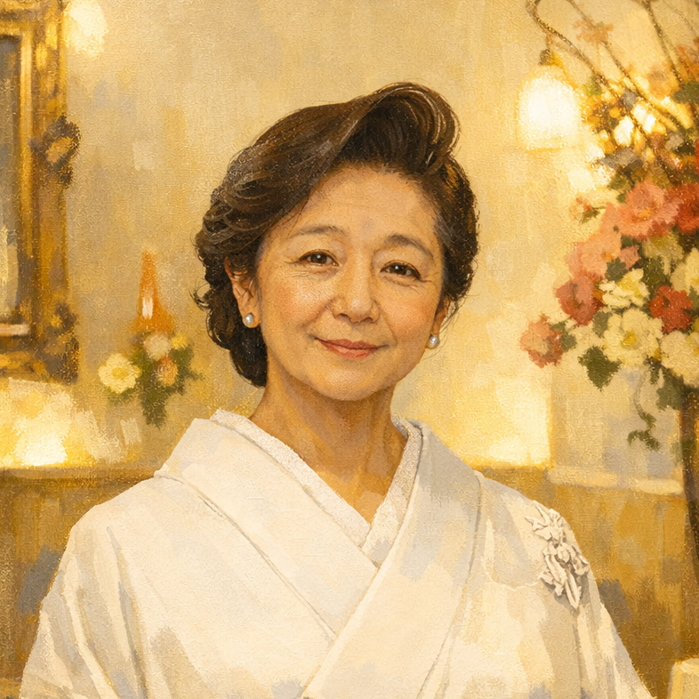

CANONICAL · 1 種固定
さくらママ
銀座で 30 年。白い着物 · 油絵調 · 暖色トーン。
全画面 (Cast Home · 相談 chat · Briefing card 等) で
共通
。
/assets/ruri-mama-photo.jpg
運用ルール
アバターは
アプリ管理側 (admin) でのみ差し替え可
。キャスト側 UI に切替メニューは出さない。
旧
/cast/avatars
の選択画面は
撤去
。
変更時は admin が photo / illustration A〜D のいずれかを 1 種選んで全 cast に配信。
localStorage への variant 保存ロジック (旧
nightos.avatar-variant
) は不要。
ADMIN 切替候補 (cast には非公開)
illust-a
親しみ系
illust-b
大人系
silhouette
横顔・無顔
camellia
椿モノグラム
↑ 4 種のアセットは admin 側で保管
キャスト UI からは見えない